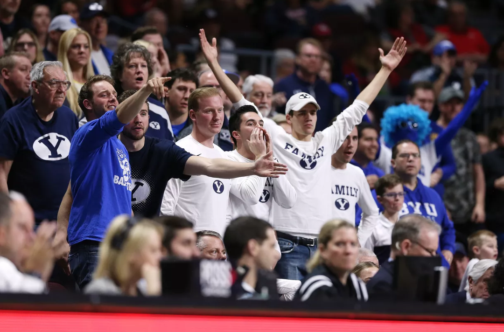

My Projected Career Path
I plan on continuing my journey in working with women's college basketball upon my graduation from the MPA program here at BYU. Hopefully that will result in my eventual return to BYU athletics. We'll just have to wait and see.

My History
During my undergrad, I worked as a practice player for two years with the BYU women's basketball team. I currently act as the graduate assistant for the BYU women's basketball team. I will remain in this role next season as I continue to learn from the coaching staff and work with the players.
My Anticipated Contributions
My current position has been a learning curve for me; however, as this season has come to a conclusion, I feel that I have really learned my role and place with this specific team. The interpersonal interactions with coaches and players is where my talents reside. I plan on continuing to be a culture builder within whatever program I work with in the future.